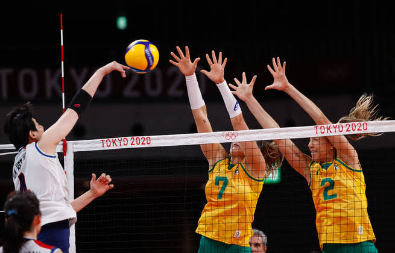

Explicando o vôlei
O voleibol ou vôlei é um esporte praticado entre duas equipes numa quadra retangular (aberta ou fechada). Ela é dividida por uma rede colocada verticalmente sobre a linha central.
O voleibol é jogado com uma bola e inclui diversos passes com as mãos. O objetivo principal é lançar a bola por cima da rede e fazê-la tocar no chão do adversário.
